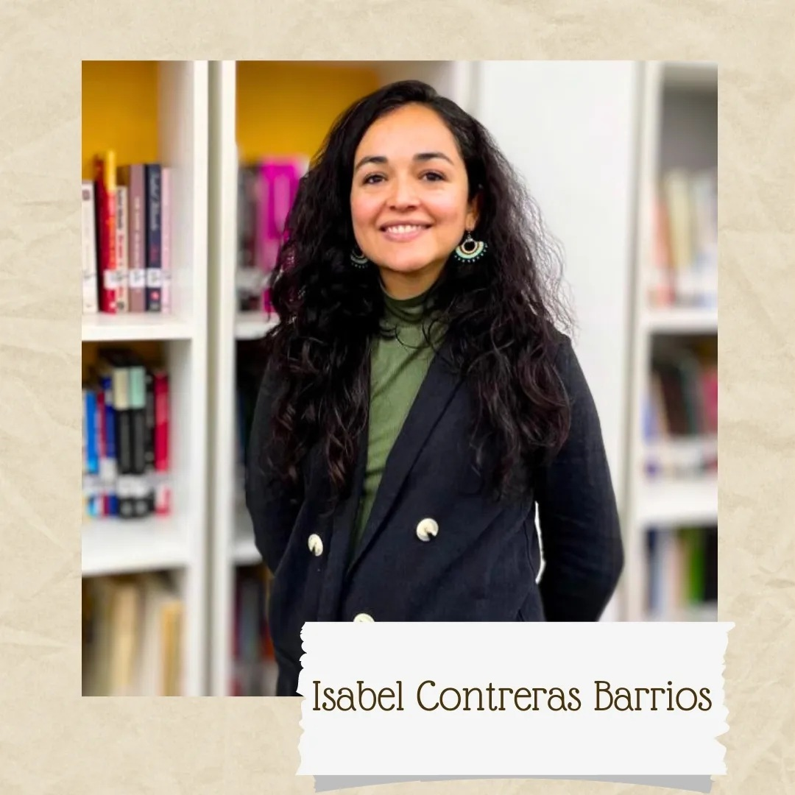
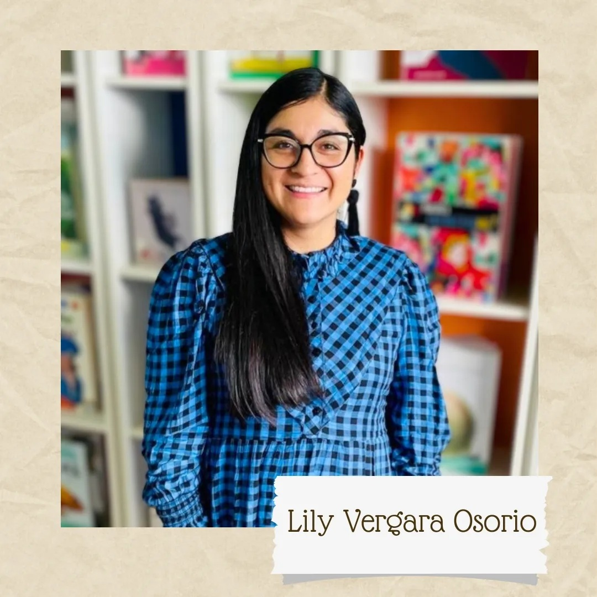
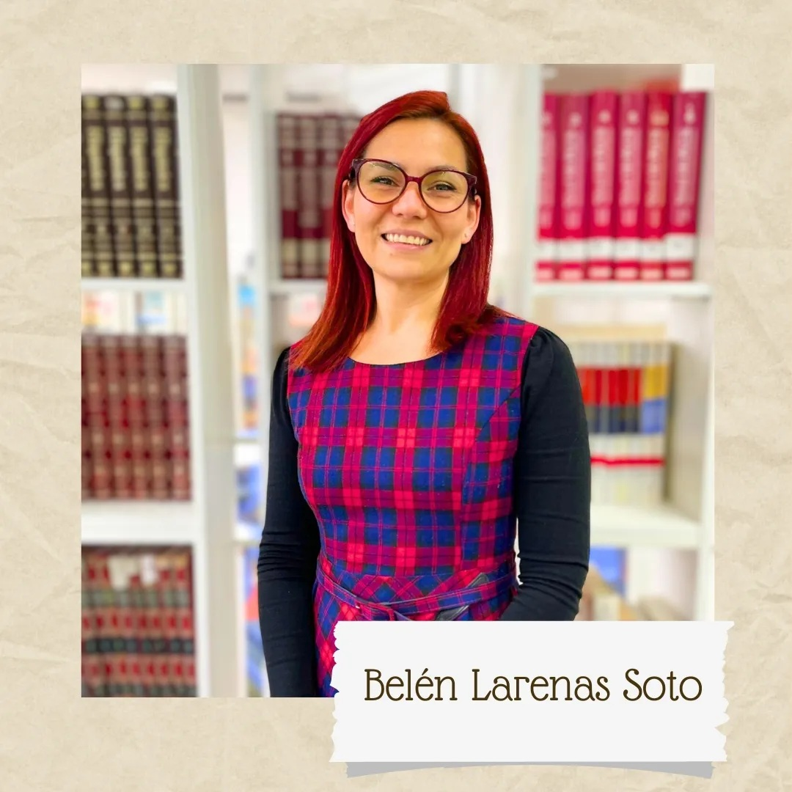

Acercando la lectura a quienes más la necesitan
"Parada Literaria" es un proyecto que busca fomentar la lectura, revitalizar y humanizar las salas de espera de los CESFAM de Rancagua, generando un espacio comunitario e inclusivo a través de la instalación de módulos de lectura donde los libros circularán de manera fácil, libre y gratuita.
IMPULSAR la libre, fácil y democrática circulación de libros en la comunidad.
FOMENTAR el uso y la apropiación del espacio mediante intervenciones como "cuentacuentos".
CAPACITAR a futuros mediadores/as de lectura.
RETOMAR la cercanía entre el equipo de salud y la población.
PROMOVER una experiencia de bienestar emocional durante la estadía de los pacientes.
Acércate a nuestros módulos en las salas de espera de los CESFAM de Rancagua. Elige un libro que te llame la atención y llévatelo a casa de manera libre y 100% gratuita.
¿Terminaste de leerlo? Puedes devolverlo en cualquiera de nuestros módulos para que otra persona lo disfrute, o traer un libro tuyo que quieras dejar a cambio.
Únete a nuestras actividades de mediación lectora y cuentacuentos. La literatura es un puente para humanizar los espacios y conectar a nuestra comunidad.
El punto de partida de nuestro proyecto en noviembre de 2023. Aquí instalamos nuestro primer módulo de lectura, inaugurando oficialmente el espacio para acercar la cultura a los pacientes y al equipo de salud.
Nuestro proyecto contempla la instalación y activación de módulos literarios en siete Centros de Salud Familiar de la comuna, creando una verdadera red comunitaria.
Un grupo de profesionales unidas por la convicción de que la cultura es un derecho y una herramienta de bienestar.



Escríbenos si quieres colaborar, donar libros, o simplemente saber más sobre cómo estamos transformando las salas de espera en Rancagua.
Nos pondremos en contacto contigo pronto